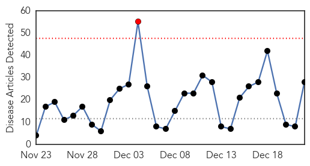
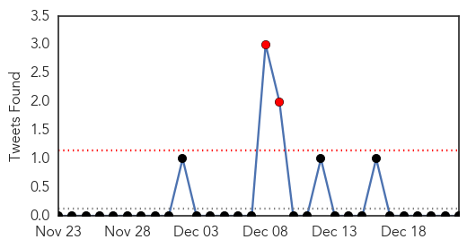
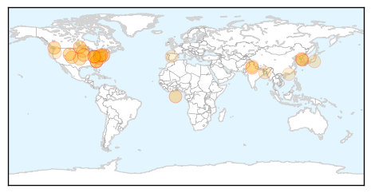
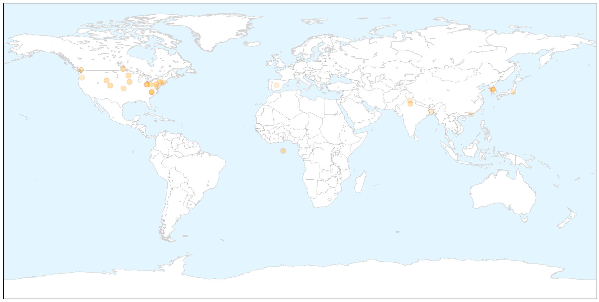
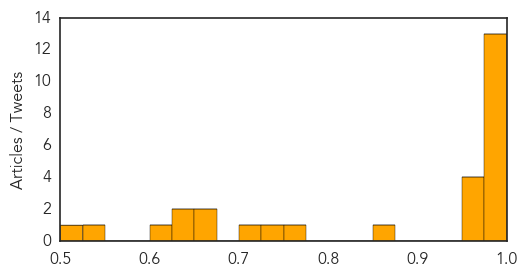

Influenza
30-Day Web Trend
1 alerts, 0 warnings

30-Day Twitter Trend
2 alerts, 0 warnings

Article Locations

X

Article Confidences
Top Articles:
- 0.999
- CDC cautions against widespread flu activity as 29 states show symptoms
- 0.999
- News, Sports, Jobs and Community Info for Belmont County - Times Leader
- 0.999
- Health Advocates Say ‘It’s Not too Late to Vaccinate’ for the Flu
- 0.999
- ‘Stomach flu’ invades Minnesota; officials urge people to wash hands frequently
- 0.998
- CentraCare requires flu vaccine for workers, volunteers
- 0.998
- Three deaths reported in Wyoming from flu
- 0.998
- The Daily Gate City, Keokuk, Iowa: News
- 0.994
- Flu Activity Peaks Between Now and February
- 0.993
- Influenza expected to peak next week
- 0.993
- Widespread flu outbreak in several US states (VIDEO)
- 0.990
- Not Too Late To Get a Flu Shot, Area Doctors Advise « CBS Philly
- 0.985
- Surveillance strengthened in Kangra district
- 0.978
- South Korea Suspends Importation of US Poultry Due to Bird Flu Outbreak
- 0.965
- Virus infecting B.C. poultry a North American first
- 0.958
- NGMC helps fight the widespread flu
- 0.956
- Preliminary data suggest that more cases of severe disease could be expected in Europe during this influenza season (ECDC
- 0.954
- South Korea Suspends Imports Of Chicken Products From U.S. Due To Bird Flu
- 0.867
- FDA approves BioCryst's flu shot
- 0.757
- WFMJ.com News weather sports for Youngstown-Warren Ohio
- 0.750
- Lawmakers urge feds to buy CT-made flu vaccine
- 0.725
- U.S. poultry industry braces for bird flu fallout
- 0.674
- Shri J P Nadda directs central team to visit Chandigarh to
- 0.665
- Senators call for more distribution of vaccine developed in Meriden
- 0.642
- Bird flu follows avian flyways
- 0.636
- Protein Sciences, UMN Pharma and IHI Corporation Enter into an Agreement... -- MERIDEN, Conn. and AKITA, Japan, Dec. 22, 2014 /PRNewswire/ --
- 0.614
- H5N8 found in Oregon
- 0.543
- Hong Kong halts some U.S. poultry imports due to bird flu in U.S.
- 0.508
- Flu costs Spanish firms €1.2 billion a year
Top Tweets:
-
No tweets found for Dec 22, 2014